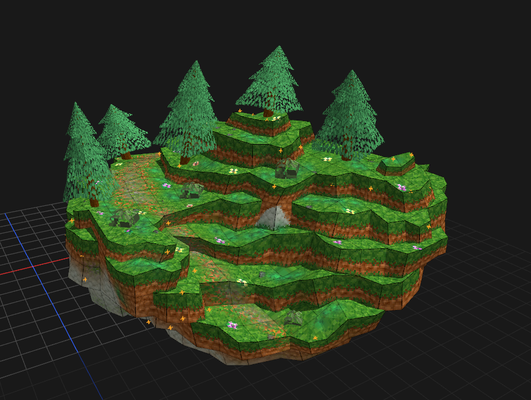
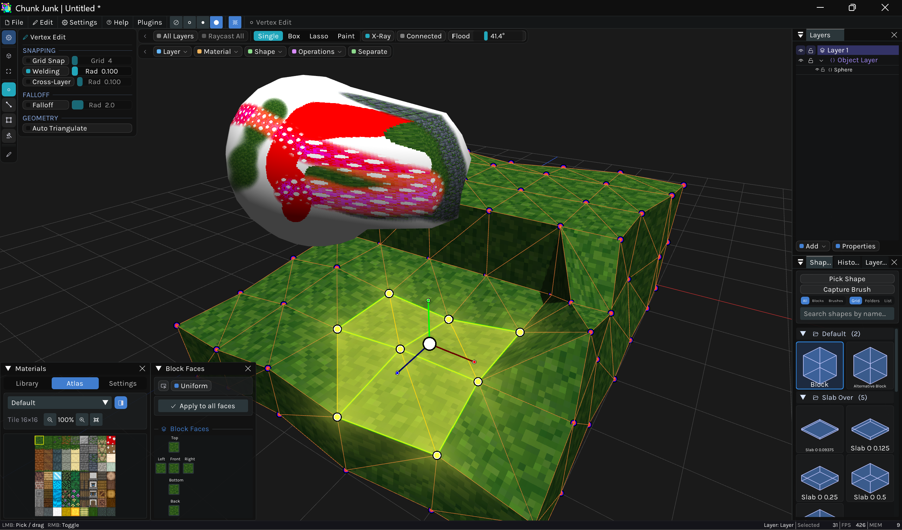
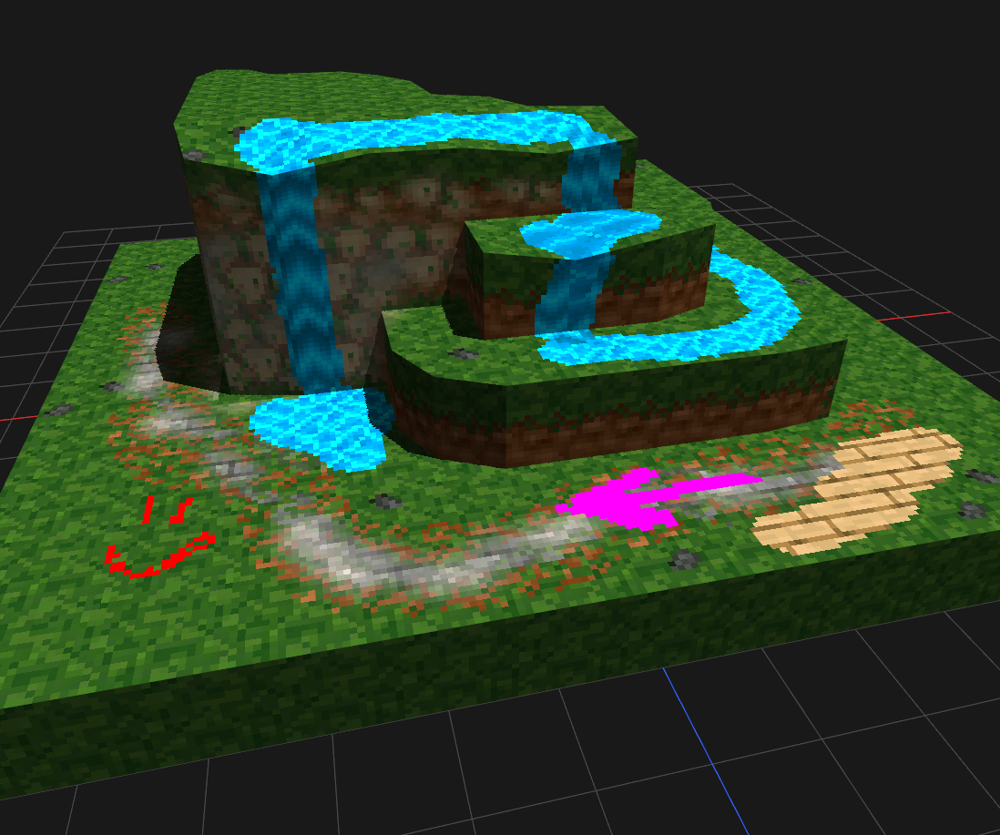
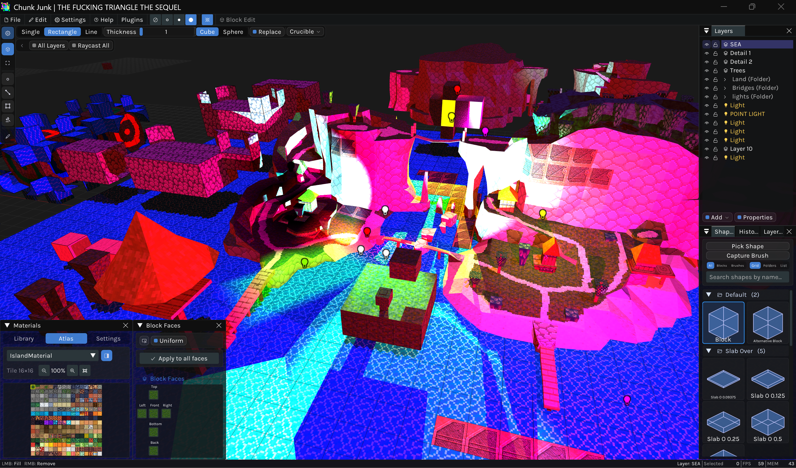
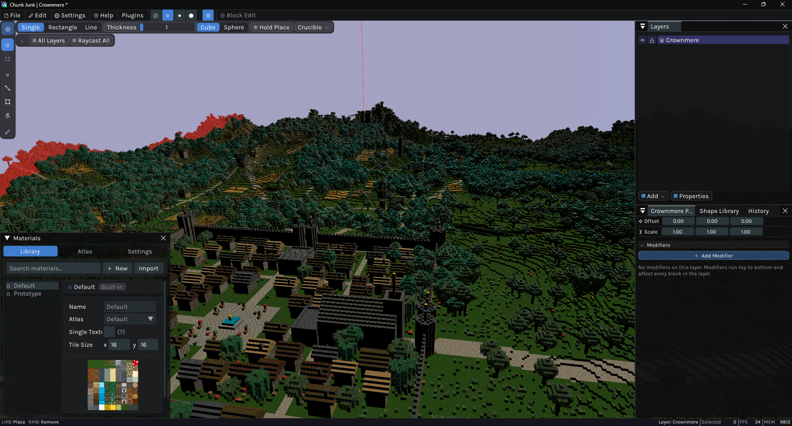
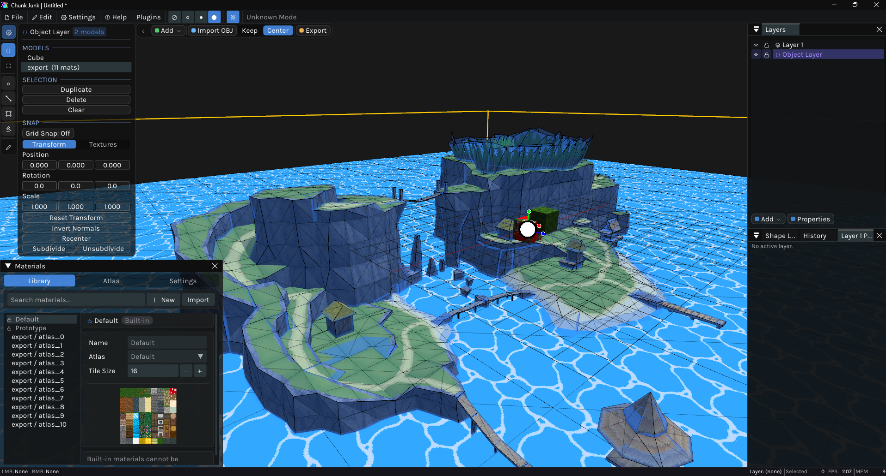
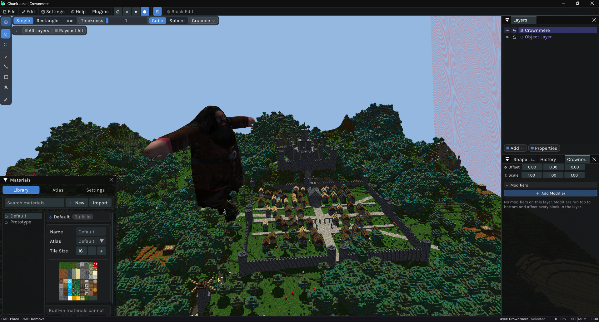
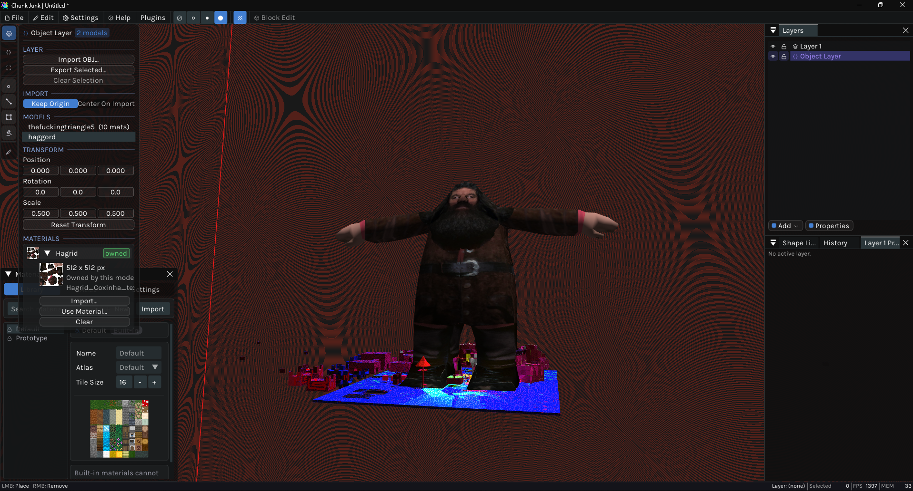

ChunkJunk is a 3D modelling application, that lets you build models with blocks, tiles and other 3D shapes.
ChunkJunk includes many different tools (See more below), like vertex, edge and face editing, but also texturing related tools, like face paint and free form texture painting.
ChunkJunk is a good tool for level design and 3D environmental asset creation.
What can you do with ChunkJunk?
There are numerous different things you can do with ChunkJunk, here is a list of the basics.
Models
Blocks are a core part of how you can create models in ChunkJunk, but it isn't the only way to create them.
You can also import your own models and edit them.

Shaping
You can edit the vertices, edges and faces of blocks, creating unique shapes.

Painting
You can paint models in ChunkJunk. The painting includes painting with colors, and textures.
>
Lighting
ChunkJunk includes its very own lighting engine. When exporting your model, you can bake the created lighting into the texture automatically.

Plugins
ChunkJunk has public plugin API, which means you can create your own plugins/mods into ChunkJunk.
For more information, go to the PluginAPI page.
 Discord
Discord



